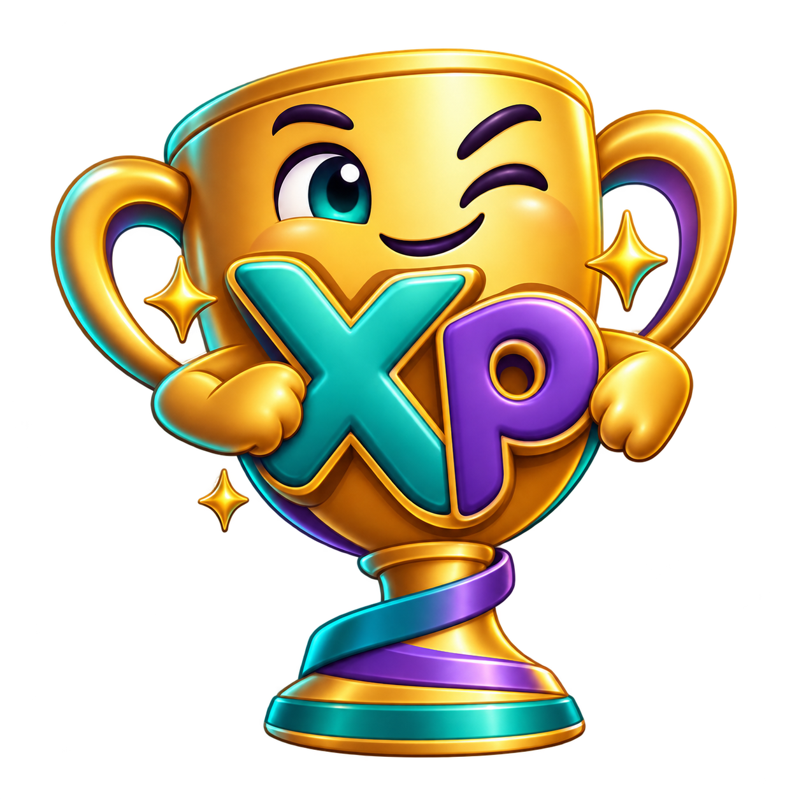

TRES PROPUESTAS · UNA FAMILIAElige cómo se juega.
Abre cada propuesta, cambia entre Aina e Iara, marca tareas y prueba el confeti. Los colores de cada niña siguen siendo turquesa y morado.
01 · MÁS JUEGO
Arcade
La copa, el saldo y el super objetivo mandan. Ideal si el premio debe verse desde el primer segundo.
Explorar Arcade →02 · MÁS AVENTURAMapa de misiones
La semana se recorre como un camino con hitos plateados y final dorado.
Explorar Mapa →03 · MÁS CLARIDADAgenda visual
Calendario grande de lunes a domingo y las tareas del día sin tener que buscarlas.
Explorar Agenda →Estas páginas son maquetas interactivas: sus botones no escriben en la base de datos. Puedes elegir una interfaz y adaptar después la app real.